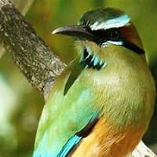
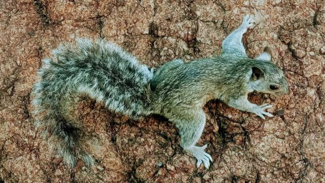

La flora de El Salvador es marcada por la vegetación de hojas caducas tropical. La variación altitudinal en topografía de El Salvador del nivel del mar sobre a 2.700 metros ha ayudado en el crecimiento de los bosques del mangle, de las lagunas del agua dulce, de los bosques del pantano, de los bosques de hojas caducas tropicales, de los bosques alpestres y de los bosques de la nube.
Los bosques ocupan el aproximadamente 17% del territorio total de El Salvador. Las plantaciones de café cubren un 9% adicional. Los bosques primitivos cubren el solamente 3% del área y de los parques nacionales solamente 0.5% de El Salvador.
La flora de El Salvador incluye la caoba, el cedro, la nuez, el mangle, el caucho, el bálsamo, el pino, el roble y árboles frutales tropicales. Las plantas medicinales, y las orquídeas agregan a la abundancia de la flora salvadoreña.
La fauna de El Salvador incluye mariposas sobre de 1000 especies, sobre 500 especies de pájaros, alrededor 200 especies de mamíferos, y 800 especies de pescados de mar.
De 500 pájaros las especies 310 se crían dentro del país y el resto es migratorio. El parakeet pacífico, wren congregado, curruca ventilador-atada, manakin long-tailed, chcachalaca blanco-hecho bolso, parakeet anaranjado-chinned, oriole con alas barra, buho de chillido pacífico, un especie de ave de Bell, incinera el fly-catcher throated, empavesado azul, tinamou del matorral, fly-catcher scissor-tailed, trogone elegante y el colibrí de Beryline es algo de la especie del pájaro encontrada en El Salvador.
Los mamíferos encontraron en El Salvador incluyen el jaguar, el tapir de Baird, coyotes, variedades de monos y armadillos. Los cocodrilos, cocodrilos, tortugas, iguanas, constrictores de boa son las variedades del reptil encontradas en El Salvador.

